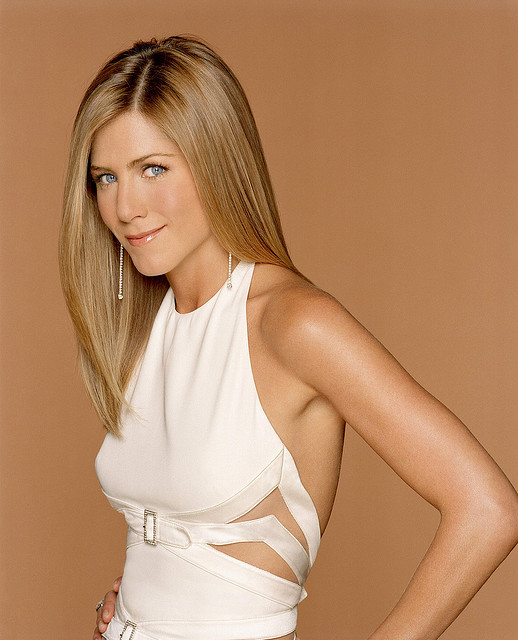
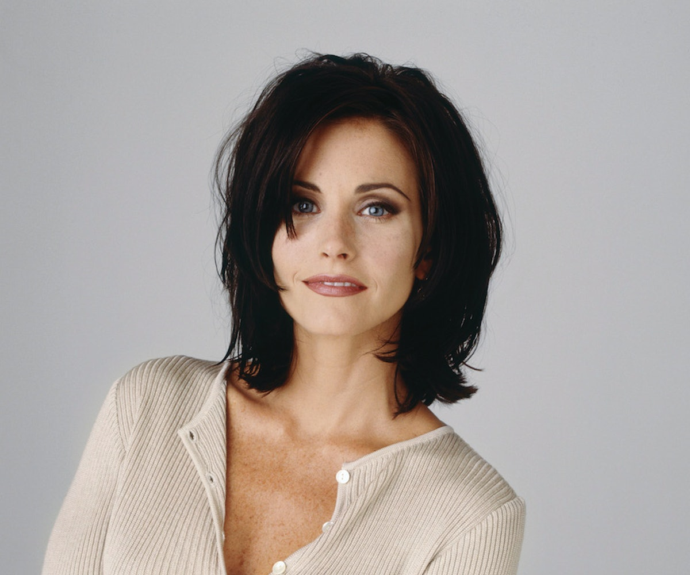
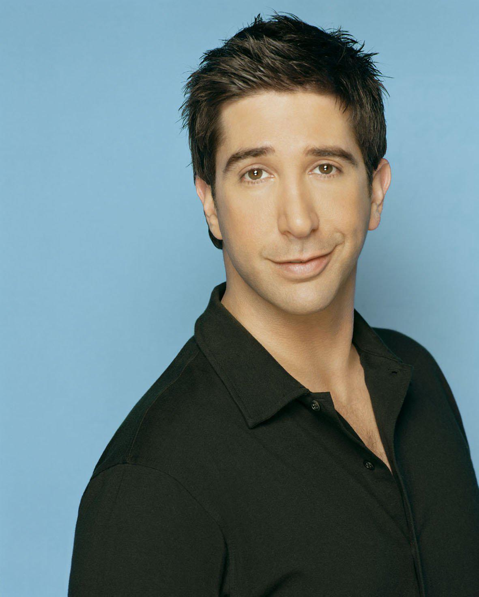
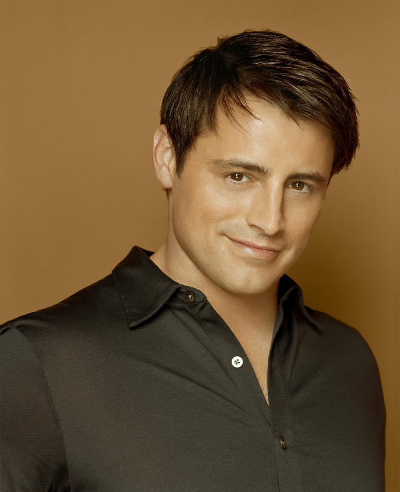

Cast
Rachel Green
Jennifer Aniston plays character Rachel Green who becomes part of the Friend group through her connection to Moinica. Rachel has an on-again, off-again relationship with Ross throughout the show and they have a daughter together. She works her way from a waitress at Centreal Perk to a fashion buyer.
Monica Geller
Monica Geller is played by Courtney Cox and her apartment is one of the main locations for the show. A little neurotic, and a chef, Ross's little sister is known for her competitive nature, Later, she marries and starts a family with Chandler when they have babies with a surrogate and buy a house in the suburbs.
Phoebe Buffay
Lisa Kudrow plays Phoebe Buffay, the eccentric masseuse who is best known for the strange songs she writes and performs at Central Perk. Rough around the edges, but soft in the center, she grew up on the streets of New York afterher mom died when she was a child.

Ross Geller
Rachel's long-time secret admirer and Monica's older brother, Ross Geller, is played by David Schwimmer. The shy, kind-natured paleontologist becomes the "divorced three times guy" and has a son named Ben with one of his exe's. He and Rachel finally end up together in the series finale after they have Emma.
Chandler Bing
Matthew Perry plays the self-depricating, sarcastic comedian of the group, Chandler Bing. The data analyst was roomates with Ross in college and is now roomates with Joey unitl he and Monica move in together. His fear of commitment ends when he marries Monica.

Joey Tribianni
Joey Tribbiani is Chandler's struggling actor roomate played by Matt LeBlanc. He finally get his big break starring on Days of Our Lives. Best known for his intense apetite and his catch-phrase, "How you doin'?", he is the well-intentioned protector of the group even if he is a little slow to catch on sometimes.
